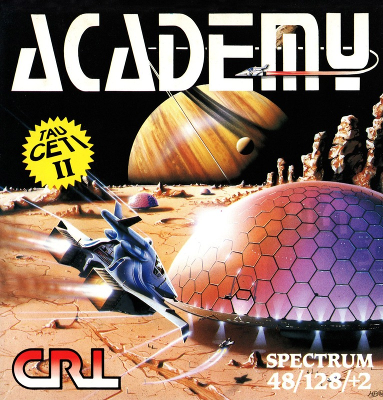
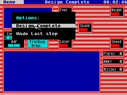
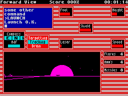
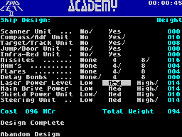

Academy


{kind=link}

| Publisher: | CRL |
| Price: | £8.95 |
| Year: | 1987 |
| Source: | CRASH, Issue 36 |

The immediate threat is over. Tau Ceti III is safe once more thanks to the efforts of a single brave pilot in a skimmer. Now Galcorp have different needs. Skimmer pilots are evidently useful and they may be needed for similar missions in the future. New pilots will enter the Academy and train in highly developed simulators to learn the skills of a skimmer pilot. To graduate, they will need to successfully complete twenty different missions in five groups of four.
The game is fairly massive so a multi-load format is used (though 128K users have a single load option). On loading, the player is presented with an options menu: play the mission currently selected, choose a different mission, select the type of skimmer to be used, receive a progress report, see the tape menu, enter a new cadet or re-define the keys.
Most of these options themselves lead to sub-menus. Selection of the various on-screen options is achieved by moving a pointer over the required feature and then confirming the choice with a keypress. The pointer is used throughout the game.

stage is to design the instrument panel
to taste. This is young Cameron during
his pink stripey period
The player can input personal details for the progress reports, and get outlines of each of the missions from the Galcorp computer. Details of the star system along with a graphic of the main planet, are provided. In the mission analysis, the computer recommends a particular skimmer for the operation. The reason for this is that the three different skimmers in the game are each fitted out slightly differently, and specialised equipment is needed under different circumstances.
Apart from the three predesigned skimmers, the player may design new skimmers by selection of the relevant option from the main menu. All the devices available have cost and weight factors. The skimmer may use any combination of devices so long as the finished vehicle weighs no more than 100 tonnes and costs 100 Mega-credits or less. The freedom of choice is substantial. Players may select various missiles or bombs, the relative strengths of lasers, shields and power units and various other options. When a ‘legal’ design has been selected, that skimmer’s control screen layout can be customised. All designs may be saved to tape for later use.

you’re involved in a fight to the death
with a suicide saucer
Once a mission is entered, play then proceeds in a fashion similar to Tau Ceti with shaded images of vehicles and buildings appearing on the viewscreen surrounded by instrumentation. Some changes are evident. Occasional lightning flashes strike the landscape and some of the planetary settings are ‘tidally locked’ worlds where the lighting is strangely altered.
Each mission requires different tactics. Some involve the obliteration of everything in sight. Others require the use of special weaponry after a long search. One such scenario highlights a new weapon, the delay bomb. Designed to penetrate armour too strong for missiles, the bomb is dropped on a target and gives about ten seconds for the skimmer pilot to fly clear, before blowing up everything in the vicinity.
Another addition are mines. These come in two varieties, very nasty and lethal. The only way to deal with these is to either give them a wide berth, or use a mine suppressor. These things are often dotted around the landscape, and can be propelled by firing at them with lasers. These as their name suggests stop mines going off.
Only experience will show which ships and buildings are susceptible to lasers or missiles. All in all there are 36 different types of objects you may see flying around the screen. Some missions are devised to require manoeuvrability, so good ship designs are needed.

If your skimmer is lost or the mission seems doomed, it can simply be entered again from the main menu. Once over 90% is scored, it has been successfully completed. With twenty missions, that’s a lot of training...
And just as a little freebie, Pete has stuck a little program on the end which gives a starmap. It’s well worth a look, and allows you to scroll around the night sky highlighting different constellations and finding the position of named stars.
CRITICISM
“Academy has taken some of the best points of Tau Ceti and improved on them. The variety of play and challenge is fantastic. The presentation is amongst the slickest I’ve seen and attention to detail is most impressive. The only thing that might put people off is the fact that when you’re carrying out a mission, there’s not that much to tell it apart from its predecessor. I think that most people will be happy with the more subtle intricacies of play. Pete Cooke has taken a good program the best way he could — upwards. And that must have been difficult.”
“I really disliked Tau Ceti as the task that you had to complete was awesomely huge, Academy seems to have solved this problem by having lots of little(ish) problems which get progressively harder. So it all becomes a lot less hopeless to try and complete and you are introduced to the various aspects of the game gently. Graphically this game equals Tau Ceti but does no more to enhance the already splendiferous worlds created by Peter Cooke. The sound is no real improvement on the original, but the effects used are nice all the same. All in all I found this a much more pleasing game to play than its parent as I’m sure you will.”
“Wow! This game is really amazingly good. The menu system is superb, and the ability to redefine the characteristics of a skimmer is excellently done. The game graphics, while being similar to those of Tau Ceti, are still brilliantly rendered, and the whole thing is just extremely playable. I like it a lot. Loads of colour is plastered around the screen; even though the playing area is monochrome, the overall impression is one of far more colour than there is. It is playable and addictive with stacks of missions, and a wide range of possibilities for skimmer alteration. Well worth buying, Academy is one of my favourite games of the moment.”
COMMENTS
| Joystick: | Kempston, Cursor, Interface 2 |
| Keyboard play: | Slick |
| Use of colour: | Limited |
| Graphics: | Fast |
| Sound: | A few effects |
| Skill levels: | Four |
| Screens: | One |
| General rating: | A worthy sequel |
| Use of computer: | 92% |
| Graphics: | 90% |
| Playability: | 92% |
| Getting started: | 90% |
| Addictive qualities: | 93% |
| Value for money: | 90% |
| Overall: | 92% |